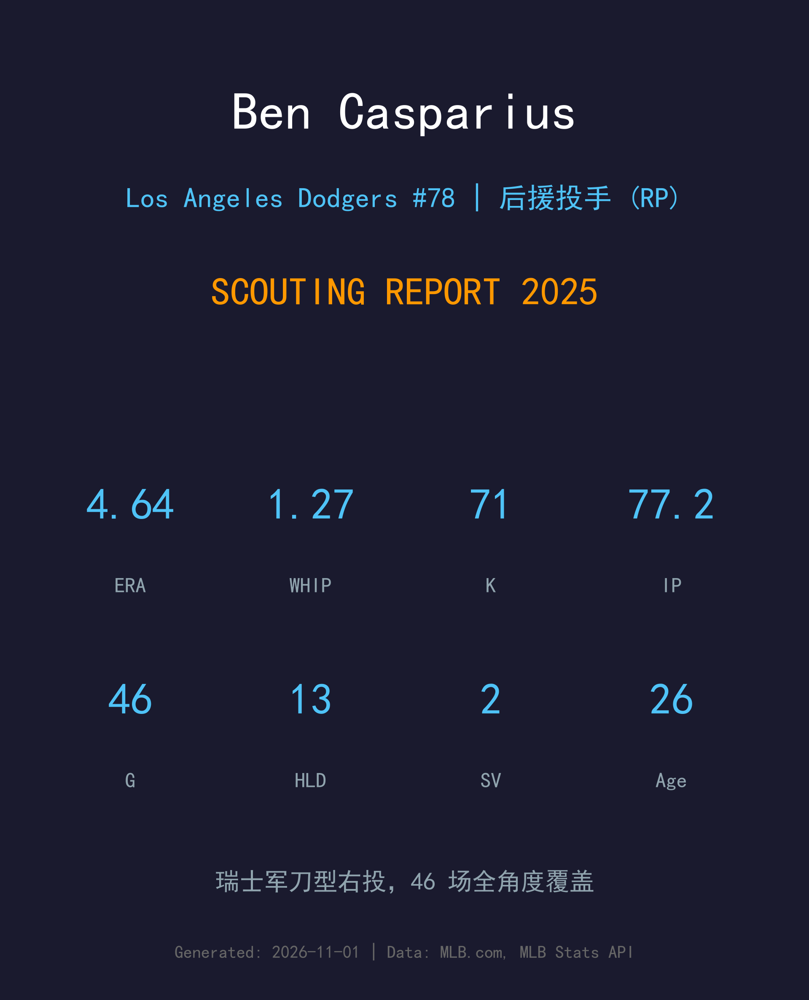
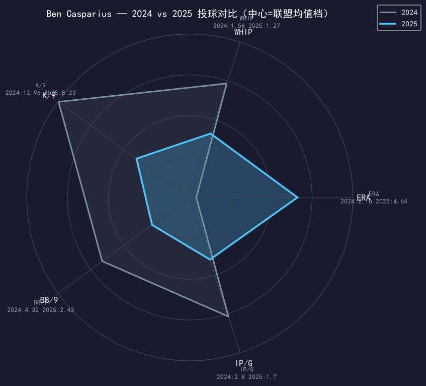
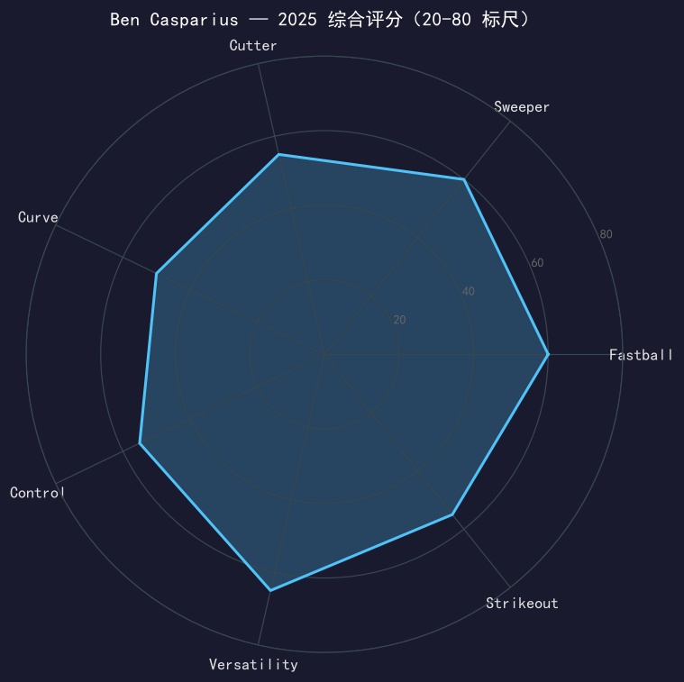

Los Angeles Dodgers #78 | 后援投手 | 右投 | 瑞士军刀型右投，46 场全角度覆盖

Ben Casparius 是道奇牛棚里最典型的「瑞士军刀」：46 场出赛横跨长中继、短中继、布局与终结，甚至紧急先发——教练组把他放在哪里，他就能给出哪个位置的答案。2024 年 8 月底才完成大联盟首秀的他，用一个完整赛季就把自己写进了道奇牛棚的长期计划。
2025 年：46 场出赛（3 场先发）、7 胜 5 负、13 次中继成功、2 次救援成功、4.64 自责分率、1.27 WHIP。ERA 比新人年的 2.16 明显回升，但这更多是角色变化的代价——从「只投无压力的 8 局」变成「哪里需要往哪搬」之后，局局都是硬骨头。1.27 的 WHIP 与 2.43 的 BB/9 说明他的控球骨架依然是可靠的。
三振率从 12.96 回落到 8.23 值得警惕，但请注意背景：他的均速没变，球种更丰富了（新增卡特与曲球），用三振换软击是教练组给他的新指令——毕竟吃局数的能力才是他留在名单上的原因。
8 月 31 日完成大联盟首秀，8.1 局 12 次三振、2.16 自责分率——在赛季最关键的阶段给了道奇牛棚一针强心剂，也为自己赢得了 2025 年的名单位置。
46 场出赛、77.2 局、13 次中继成功全队前列——从四月到九月，他是道奇使用频率最高、角色变换最多的投手。
三次紧急先发全部撑过 4 局，其中一场拿下胜投——在轮值连番伤病的赛季里，他的「哪里缺人顶哪里」属性价值千金。

| 赛季 | G | GS | W-L | ERA | WHIP | IP | SO | BB | K/9 |
|---|---|---|---|---|---|---|---|---|---|
| 2024（新人年·小样本） | 3 | 0 | 2-0 | 2.16 | 1.56 | 8.1 | 12 | 4 | 12.96 |
| 2025（完整赛季） | 46 | 3 | 7-5 | 4.64 | 1.27 | 77.2 | 71 | 21 | 8.23 |
新人年的 2.16 ERA 建立在 8.1 局的极小样本上，参考意义有限。真正有价值的变化在 BB/9：4.32 降到 2.43——控球精度的提升是角色升级的通行证。HR/9 从 0.00 到 0.93 属于正常回落，8 支全垒打在 77.2 局中并不刺眼。综合来看：他从一个「三振惊艳的小样本新人」成长为一个「能连续出赛、吃局数、角色全能」的可靠牛棚支柱。
2025 赛季真实配球数据（MLB Stats API pitchArsenal）：
2025 年新增的当家武器，横扫位移对付左打者效果拔群，两好球后的追杀成功率大幅提升。
均速 96+ mph 的速球是他在牛棚立足的根本，好球带上半部抢好球数的能力稳定。
破坏棒次与诱导软弱滚地的利器，面对右打者的内角武器，也是他吃局数效率的来源。
配球节奏与改变打者视线高度的第四球种，均速落在 80 mph 档位的慢曲，变速效果出色。
4.64 的 ERA 放在自由市场会吓跑很多人，但道奇教练组清楚 Casparius 的价值：46 场出赛里有大量是「比分接近、局面复杂」的真枪实弹。13 次中继成功、0 次救援失败，说明他在被赋予的布局任务中几乎从不失手——ERA inflated 主要来自长中继与垃圾时间登板的零星失分。
BB/9 从 4.32 降到 2.43 是 2025 年最重要的数据。对一个需要频繁在压力下登场的后援来说，坏球少意味着可以用更少的球数解决打者，也意味着教练组敢在第九局之前就把他派上去。strikePercentage .640 与 16.25 的每局用球数都说明他的效率骨架已经成型。
12.96 → 8.23 的三振率下滑看着吓人，但两个背景必须考虑：一是新人年样本只有 8.1 局；二是 2025 年他的配球明显从「全力三振」转向「诱导早接触、快速收尾」——这是教练组对吃局数型后援的标准改造。球速没变（96.2 mph）、球种更杂（ST/FC/CU 全部上线），Stuff 没有退化，只是使用方式变了。

角色万能的牛棚瑞士军刀
B 级 / 牛棚多面手
道奇 2025 季后赛夺冠之路：外卡 2-0 红人 → NLDS 3-1 费城人 → NLCS 4-0 酿酒人 → 世界大赛 4-3 多伦多蓝鸟。
Casparius 未入选季后赛名单。教练组在牛棚名额的取舍中，优先选择了季后赛经验丰富的老将。
Ben Casparius 的 2026 年有一个清晰的上行通道：如果三振率能在保持控球的前提下回到 9 以上，他将从「瑞士军刀」升级为「布局核心」。道奇牛棚每年都有人离开，而他的年龄、控球与耐久度都站在时间这一边。当然，他也需要证明自己能在季后赛级别的打线面前投出同样的内容。
理想剧本：竞争第 7-8 局布局主力，局数上到 85-90
现实基准：继续全能工具人角色，偶尔 stretched 先发
上行惊喜：若横扫滑球继续进化，有机会摸到终结者备胎的位置
Ben Casparius 来自康涅狄格州韦斯特波特，大学时期是康涅狄格大学的王牌投手，2021 年选秀第五轮被道奇选中。他的 ascent 不算快——从小联盟一步一步磨上来，靠的不是一鸣惊人的天赋，而是每一年都在进步的控球与不断丰富的武器库。
2024 年 8 月 31 日，他在道奇最需要的时刻被拉上大联盟，用 8.1 局 12 次三振的表现证明了自己属于这个舞台。2025 年，他完成了从「惊喜新人」到「牛棚常客」的蜕变，46 场出赛背后是教练组毫无保留的信任。
在道奇这支星光璀璨的球队里，Casparius 属于不发光却不可或缺的类型——就像瑞士军刀，平时挂在钥匙圈上不起眼，用到的时候才知道每一把小工具都磨得锋利。